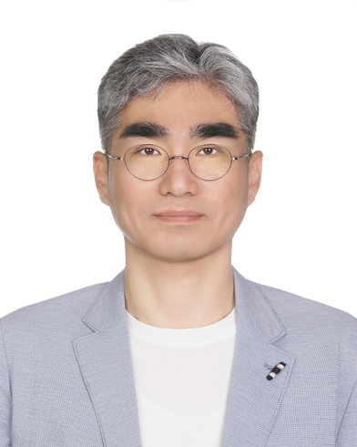

지도교수

신상욱
Sang Uk Shin, Ph.D.
- 소속
- 국립부경대학교 컴퓨터인공지능공학부
- 연구 분야
- 응용암호 · 블록체인 보안 · 디지털 포렌식
- 이메일
학력
Ph.D.
부경대학교 컴퓨터과학과박사
M.S.
부경대학교 컴퓨터과학과석사
B.S.
부경대학교 컴퓨터과학과학사
주요 경력
2025.01 — 현재
한국정보보호학회 부회장
2017.01 — 현재
한국정보보호학회 논문지 편집위원
2016.01 — 현재
한국정보보호학회 이사
2009.09 — 2010.05
한국전자통신연구원 초빙연구원
2003.09 — 현재
국립부경대학교 컴퓨터인공지능공학부 교수
2000.04 — 2003.08
한국전자통신연구원 선임연구원